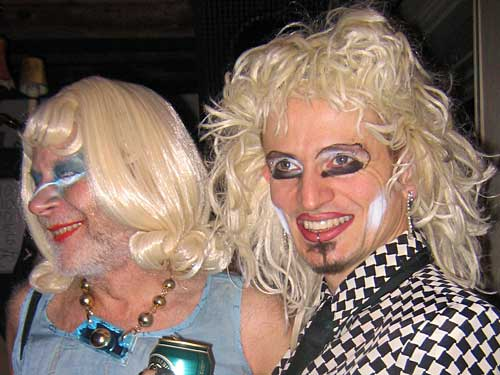
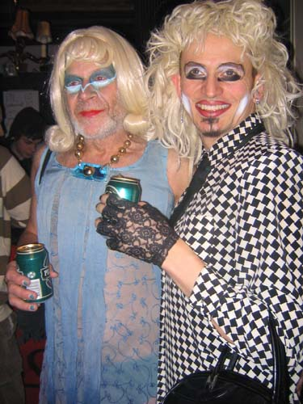
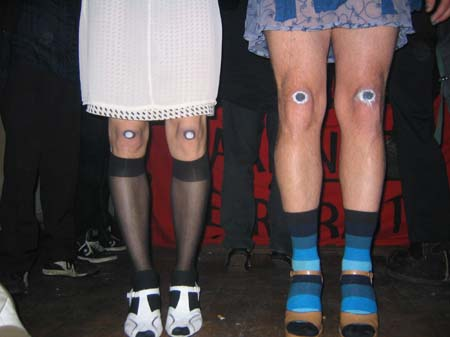
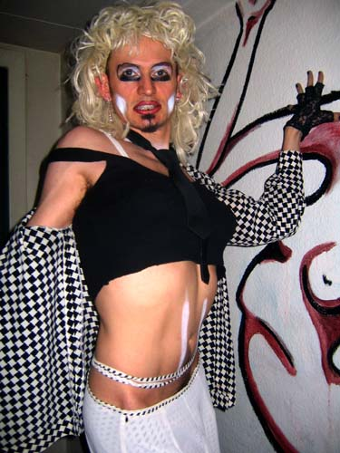
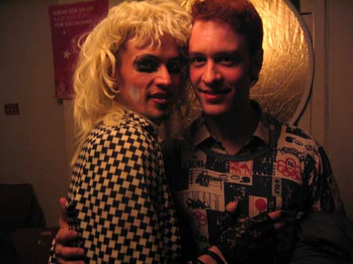
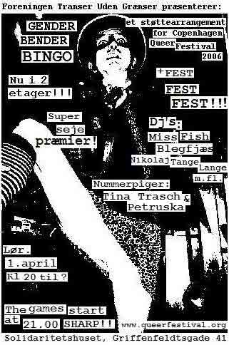

Dennis Agerblad at the Gender Bender Bingo Party, Solidaritets Huset, Copenhagen.
01/04 - 2006.

Søde Car O'lina and Dennis Agerblad.

Søde Car O'lina and Dennis Agerblad.

Dennis Agerblad and Søde Car O'lina.


Dennis Agerblad & Daniel Svanberg Bøtcher.
